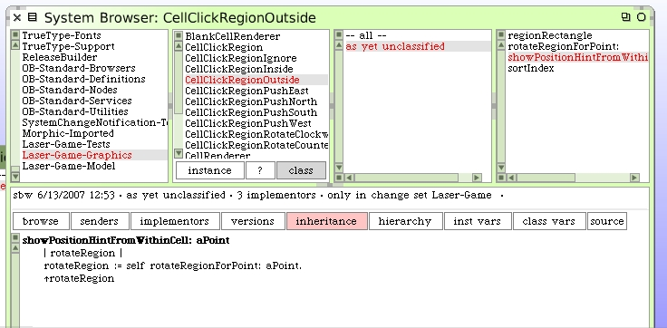
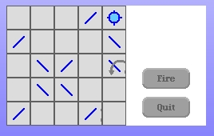

The code to handle showing hints when we are in the outside region is not complete yet. Add this class method to CellClickRegionOutside.
When the cursor hovers over the outside click region in our mirror cells we now get clockwise and counter-clockwise arrows. It looks like we should make some cosmetic changes. The method, as written, in the mirror render class uses names like "push region" and we are no longer just pushing. So there's some work to do to clean all that up.
